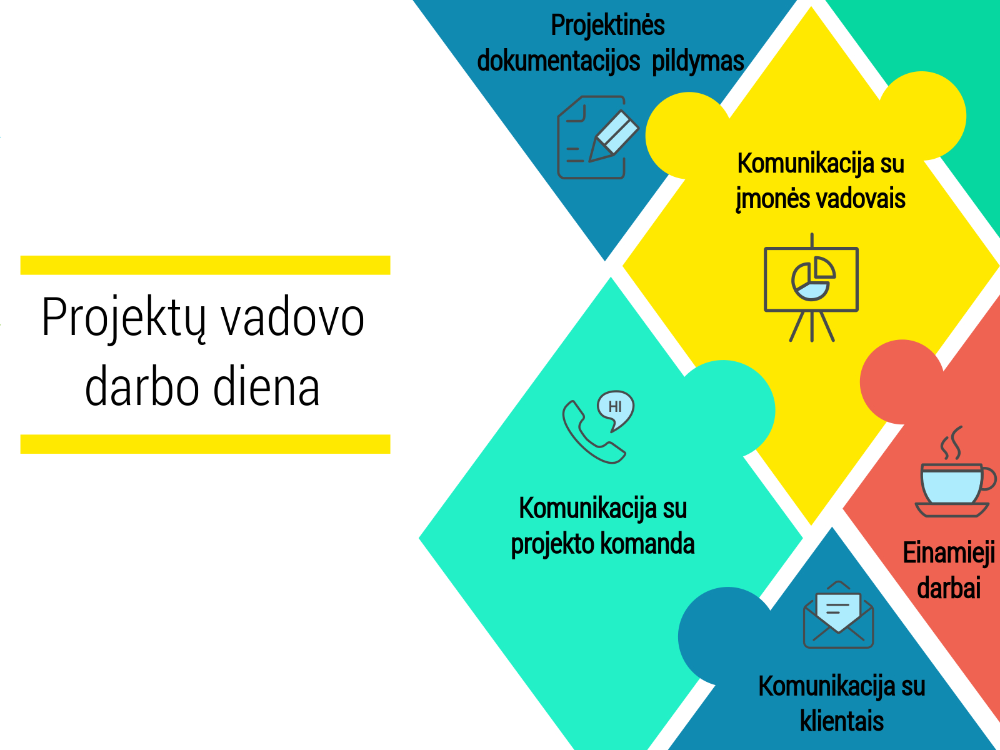

Techninis autorius
Techninis autorius yra atsakingas už produkto, techninės ir programinės įrangos dokumentaciją. Techninis autorius nuolat palaiko ryšį su komanda, tam kad surinktų informaciją apie produktą ir pasirūpina, kad dokumentacija būtų suprantama kiekvienam. Dokumentacija gali būti pateikiama įvairiais formatais, tai gali būti svetainė, žinynas, katalogas, programėlė ir t.t. Dokumentacijos rolė kompanijoje yra itin svarbi, nes būtent ji formuoja geros kompanijos įvaizdį.

Kokios yra pagrindinės savybės, kurias turi turėti žmogus dirbantis techniniu autoriumi?
- Geri rašymo įgūdžiai. Tai turi būti ne tik gera stilistika ir gramatika, tačiau techninis autorius turi mokėti sudėtingą ir technišką informaciją paversti kiekvienam suprantamu turiniu.
-
Gebėti dirbti ne tik su turinio valdymo programomis, bet ir turėti šiek tik techninių žinių. Techniniam autoriui praverčia žinoti šiek tiek HTML ir CSS.
-
Mokėti dirbti komandoje. Techninis autorius turi gebėti komunikuoti su komanda, kad suprasti, kaip produktas veikia, kokios yra jo specifikacijos ir gebėti tai aprašyti.
Kokių techninių žinių gali prireikti techniniui autoriui?
-
MADCAP - turiniui rašyti ir valdyti.
-
Target Process / Jira - bendravimui su komanda, užduočių paskirstymui, proceso sekimui
-
Xlm editor
-
Photoshop - paveikslėlių kūrimui ir redagavimui
- Camtasia - parodomiesiems video
- Gmail ir Slack - komunikacijai